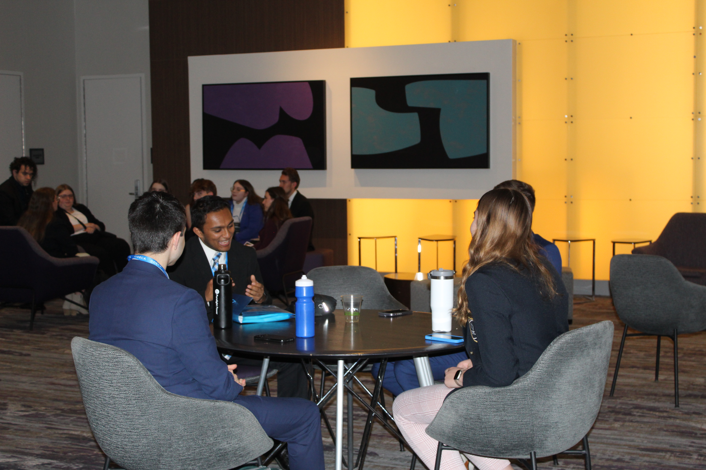

Who We Are
- Leadership through service and innovation
- Integrity and professionalism
- Community engagement and inclusivity
- Commitment to student growth and development

Wisconsin Collegiate DECA is a student-led, advisor-supported organization that empowers members to grow personally and professionally while providing a challenge to think innovatively and collaborate with alumni and industry leaders.


To empower college students through business-focused programs that develop professional skills, promote leadership, and foster civic engagement across Wisconsin campuses.
Join a community of driven students and professionals where you can gain hands-on experience, expand your network, and develop skills that will set you apart in your career.